Copyright © 2006 Sun Microsystems, Inc. All Rights Reserved.
Java Software
인스톨 한 시스템의 Java 시큐리티 정책를 정의하는, 외부 정책 구성 파일의 작성과 수정을 실시합니다.
Java 실행시의 정책는, 다양한 소스를 출처(소)로 하는 코드가, 다양한 주체로서 실행될 때, 어떠한액세스권을 이용할 수 있는지를 지정해서 ,Policy 객체에 의해 표현됩니다. 디폴트의 Policy 의 구현은, 정적인 ASCII 형식의 정책 구성 파일로부터 정보를 가져옵니다.
정책 파일은, 간단한 텍스트 문자 편집기를 사용하는지, 이 문서로 설명하는 그래피컬한 Policy Tool 유틸리티를 사용해 작성할 수 있습니다. Policy Tool 를 사용하면(자), 입력의 수고를 줄일 수 있을 뿐만 아니라,정책 파일의 구문에 대해 알 필요가 없어지기 (위해)때문에, 에러를 줄일 수가 있습니다.
「Policy Tool 의 사용법」에서는,Policy Tool 를 사용해 정책 파일을 작성 및 수정하는 방법에 대해 설명합니다.
「예」에서는,Policy Tool 의 사용예를 소개해, 자세하게 설명합니다.
「관련 항목」에서는, 관련하는 문서에의 링크를 제공합니다.
Policy Tool 의 기동
Policy Tool 를 기동하려면 , 커멘드행에 다음과 같이 입력합니다.
policytool「Policy Tool」윈도우가 표시됩니다.
Policy Tool 는, 기동할 때마다, 「사용자 정책 파일」이라고도 불리는 파일로부터 정책 정보를 취득해, 윈도우에 표시하려고 합니다. 디폴트의 사용자 정책 파일은, 홈 디렉토리에 있다
. java.policy라는 이름의 파일입니다. 정책 파일이 발견되지 않는 경우는, 그것을 나타내는 메세지와 공백의 「Policy Tool」윈도우가 표시됩니다. 즉, 윈도우에 표제나 버튼은 표시됩니다만, 데이터는 포함되어 있지 않습니다 (다음의 화면을 참조).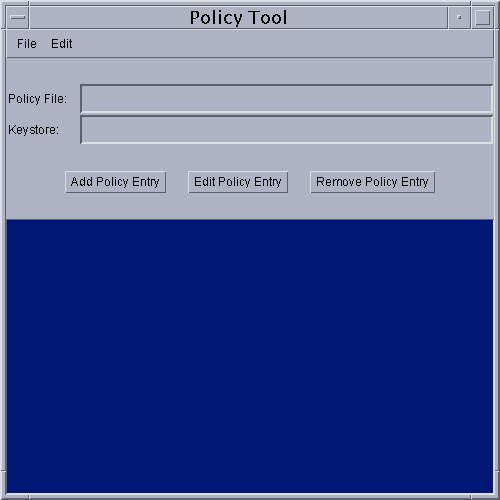
Policy Tool 를 기동한 뒤는, 작업하는 임의의 정책 파일을열 수가 있습니다. 또,정책 엔트리를 추가하거나 필요에 따라서키스토어를 지정하거나 해,파일을 보존하면, 새로운 정책 파일을 작성할 수도 있습니다.
Policy Tool 를 시작해 실행한 시점에서는, 사용자 정책 파일은 존재하고 있습니다 (수동으로 작성했을 경우를 제외하다).
새로운 정책 파일의 작성
새로운 정책 파일을 작성하려면 ,「파일」메뉴로부터「신규」커멘드를 선택합니다. 현재 열리고 있는 정책 파일이 있으면, 필요에 따라서 파일의 보존을 유발 (prompt)하는 메세지가 표시된 후에, 그 파일이 닫혀져, 새로운 「Policy Tool」윈도우가 표시됩니다. 그 윈도우에는 표제나 버튼이 표시되고 있습니다만, 데이터는 포함되어 있지 않습니다.
주:상기의 조작은, Policy Tool 를 시작해 실행하는 경우는 필요 없습니다. Policy Tool 는 사용자 정책 파일을 열려고 합니다만, 그 파일이 아직 존재하지 않기 때문에 (수동으로 작성했을 경우를 제외하다), 데이터가 아무것도 포함되지 않은 윈도우가 표시됩니다.
새로운 「Policy Tool」윈도우가 표시되면(자),정책 엔트리를 작성하거나키스토어를 지정하거나 (키스토어 별명을 지정한 정책 엔트리가 있는 경우) 할 수가 있습니다. 정책 파일은, 언제라도보존할 수 있습니다.
다른 정책 파일의 오픈
현재 작업중의 정책 파일과는 다른 정책 파일로 작업하려면 ,「파일」메뉴의「연다」커멘드를 사용합니다.
현재 열리고 있는 정책 파일이 있으면, 필요에 따라서 파일의 보존을 유발 (prompt)하는 메세지가 표시된 후에, 그 파일이 닫혀져 「연다」다이얼로그가 표시됩니다. 이 다이얼로그에서는, 디렉토리 구조를 이동해, 작업하는 정책 파일이 있는 디렉토리를 검색할 수 있습니다. 파일을 선택해,「연다」버튼을 선택합니다.
선택한 정책 파일의 정보가 「Policy Tool」윈도우에 표시됩니다. 표시되는 정보는, 정책 파일명, 키스토어의 URL (존재하는 경우), 그리고 정책 파일내의 각 정책 엔트리의 CodeBase, SignedBy, 및 주체 파트입니다.
키스토어의 지정
정책 엔트리의 SignedBy 파트에서 지정된 별명의 열쇠 정보를 포함한 키스토어를 지정하려면 ,「편집」메뉴의「키스토어의 변경」커멘드를 선택합니다.
다이알로그 박스가 표시되면(자), 새로운 키스토어의 URL 와 키스토어의 타입 (생략 가능)을 지정합니다.
예를 들어,
/tests/디렉토리에 있는 mykeystore 라는 이름의 키스토어를 지정하려면 , 「New KeyStore URL」라고 하는 라벨이 붙은 텍스트 박스에, 다음과 같이file:URL 라고 입력합니다.file:/tests/mykeystore또, 키스토어의 타입으로서 JKS (Sun 가 지원하고 있는 독자적인 키스토어의 타입)를 지정하려면 , 「신규 키스토어의 타입」이라고 하는 라벨이 붙은 텍스트 박스에, 다음과 같이 입력합니다.
JKS키스토어의 URL 와 필요에 따라서 타입을 지정하면(자),「이해」를 선택합니다. 조작을 취소하는 경우는,「취소」를 선택합니다. 조작을 취소하지 않았던 경우는, 「키스토어」라고 하는 라벨이 붙은 텍스트 박스에, 지정한 키스토어의 URL 와 타입이 표시됩니다.
새로운 정책 엔트리의 추가
새로운 정책 엔트리를 추가하려면 , 「Policy Tool」메인 윈도우로「정책 엔트리의 추가」버튼을 선택합니다.
「정책 엔트리」다이알로그 박스가 표시됩니다.
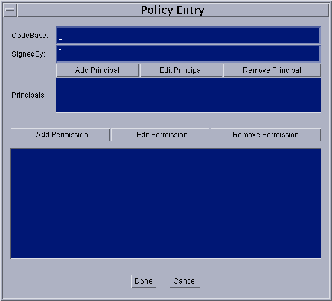
이 다이알로그 박스에서는, 다음의 정보를 지정합니다.
- 「CodeBase」엔트리 (생략 가능). 코드의 출처(소)를 나타내는 URL 를 지정합니다. 예를 들어, 로컬의
/JavaSoft/TESTS/디렉토리로부터의 코드를 지정하려면 , 「CodeBase」텍스트 박스로 다음과 같이 file: URL 를 입력합니다.file:/JavaSoft/TESTS/- 「SignedBy」엔트리 (생략 가능). 코드에 서명하기 위해서 사용된 비공개키를 소유하는 서명자를 참조하기 위한 , 키스토어에 있는 별명을 지정합니다. 예를 들어, 「duke」라고 하는 별명을 지정하려면 ,「SignedBy」텍스트 박스에 다음과 같이 입력합니다.
duke- 「주체」엔트리 (생략 가능). 액세스권이 허가되기 위해서(때문에), 어느 주체로서 코드를 실행할 필요가 있는지를 나타내는, 주체의 리스트를 지정합니다. 「새로운 주체의 추가」를 참조해 주세요.
- 1 개(살) 이상의액세스권엔트리. CodeBase 및 SignedBy 의 값에 의해 지정된 소스로부터의 코드 (이러한 값이 지정되어 있지 않은 경우는 임의의 코드)에 허가하는 액세스권을 지정합니다. 「새로운 액세스권의 추가」를 참조해 주세요.
SignedBy 의 값은, 서명자가 관련지을 수 있었던 일식의 공개키에, 키스토어를 사용해 매핑 되는 별명의 캐릭터 라인입니다. 이러한 공개키는, 지정된 코드 소스로부터의 클래스가, 실제로 이러한 서명자에 의해 서명되고 있는 것을 검증하기 위해서 사용됩니다.
SignedBy 의 값에는, 복수의 서명자를 콤마로 단락지은 캐릭터 라인을 지정할 수 있습니다. 예를 들어, 「Adam, Eve, Charles」와 같이 지정합니다. 이 경우는, 각 요소가 OR 는 아니고 AND 로 결합되어 「Adam 와 Eve 와 Charles 에 의해 서명되었다」라고 하는 의미가 됩니다.
SignedBy 의 값은 생략 할 수 있습니다. 생략 했을 경우는, 「임의의 서명자」라고 하는 의미가 되어, 코드에 서명이 행하여지고 있는지 어떤지가 검증되지 않게 됩니다. 같이CodeBase 엔트리를 생략 했을 경우는, 「임의의 코드」라고 하는 의미가 되어, 코드의 출처(소)가 검증되지 않게 됩니다.
이 때문에,CodeBase 엔트리가 존재하지 않는 경우는, 지정된 별명의 서명이 붙은 모든 코드에 대해, 지정된 액세스권이 주어집니다. 또,SignedBy 엔트리가 존재하지 않는 경우는, 코드에 서명이 행하여지고 있는지 어떤지, 또 누가 서명했는지를은 관계없이, 지정된 CodeBase 를 출처(소)로 하는 모든 코드에 대해서, 지정된 액세스권이 허가됩니다. CodeBase 엔트리와 SignedBy 엔트리가 어느쪽이나 존재하지 않는 경우는, 모든 코드에 대해서, 지정된 액세스권이 허가됩니다.
주:CodeBase 치의 정확한 의미는, 말미의 문자에 따라서 다릅니다. 말미가 「/」의 CodeBase 는, 지정된 디렉토리내의 모든 클래스 파일 (JAR 파일을 제외하다)을 나타냅니다. 말미가 「/*」의 CodeBase 는, 그 디렉토리내에 있는 모든 파일 (클래스 파일과 JAR 파일의 양쪽 모두)을 나타냅니다. 말미가 「/-」의 CodeBase 는, 지정된 디렉토리와 그 아래의 전서브 디렉토리내의 모든 파일 (클래스 파일과 JAR 파일의 양쪽 모두)을 나타냅니다.
주체엔트리에는, 「주체의 값」의 리스트를 지정합니다. 각각의 주체의 값에는, 실행하고 있는 thread의 주체 세트내에 존재하고 있지 않으면 안 되는 principal_type 과 principal_name 의 페어를 지정합니다. 주체 엔트리는 생략 가능합니다. 생략 했을 경우는, 「임의의 주체」라고 하는 의미가 됩니다.
principal_type 이 지정되지 않고, principal_name 가 인용부호로 둘러싸인 캐릭터 라인인 경우는, 실행시에 정책 파일이 처리될 때, 그 캐릭터 라인은 키스토어의 별명으로서 다루어집니다. 키스토어는 별명을 경유해 X509 증명서를 조사해, 문의합니다. 그 증명서가 발견되었을 경우, 주체의 타입은 javax.security.auth.x500.X500Principal 이라고 자동적으로 상정되어 실제의 주체의 이름은, 증명서에 있는 Subject 로서 식별된 이름이라고 상정됩니다. X509 증명서에의 매핑이 발견되지 않는 경우는, 지정된 주체에 대해서 액세스권을 허가하고 있는 정책 엔트리 전체가 무시됩니다.
새로운 주체의 추가
새로운 주체를 추가하려면 , 「정책 엔트리」다이알로그 박스로「주체의 추가」버튼을 선택합니다. 「주체」다이알로그 박스가 표시됩니다.
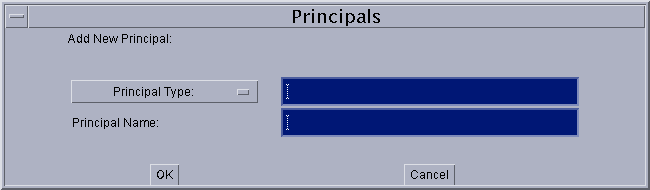
주체를 추가하려면 , 다음과 같이 합니다.
- 주체의 타입을 입력하는지, 또는 선택합니다.
「주체의 타입」이라고 하는 라벨이 붙은 드롭 다운 리스트에는, 짜넣어지고 있는 주체의 타입의 리스트가 표시됩니다. 리스트에 있는 타입을 지정하는 경우는, 리스트로부터 그 타입을 선택합니다. 선택한 주체의 타입의 완전한 이름이, 드롭 다운 리스트의 우측의 텍스트 박스에 표시됩니다.
사용자가 정의한 주체의 타입을 지정하는 경우는, 그 주체의 타입을 텍스트 박스에 입력합니다.
- 주체의 이름을 입력합니다.
주체의 이름을, 「주체의 이름」텍스트 박스에 직접 입력합니다. 예를 들어,
duke라는 이름의 주체를 지정하려면 , 다음과 같이 입력합니다.duke주체의 정보를 지정하면(자),「이해」버튼을 선택합니다. 조작을 취소하는 경우는,「취소」를 선택합니다. 새로운 주체의 행이 「주체」엔트리에 표시됩니다.
주체의 편집
기존의 주체를 편집하려면 , 「주체」엔트리로 주체의 행을 선택해,「주체의 편집」버튼을 선택합니다. 또는, 그 주체의 행을 더블 클릭 하는 것만으로도, 주체를 편집할 수 있게 됩니다.
새로운 주체를추가할 때와 같은 「주체」다이알로그 박스가 표시됩니다. 다만, 이 경우는, 기존의 주체의 정보가 표시되고 있습니다. 표시되고 있는 정보를 변경하려면 , 드롭 다운 리스트로부터 새로운 값을 선택하는지, 또는 텍스트 박스의 정보를 새로운 값으로 옮겨놓습니다.
편집이 끝나면(자),「이해」버튼을 선택합니다. 변경을 취소하는 경우는,「취소」를 선택합니다. 「주체」엔트리에, 수정 후의 주체의 정보가 표시됩니다.
주체의 삭제
기존의 주체를 삭제하려면 , 「주체」엔트리로 그 주체의 행을 선택해,「주체의 삭제」버튼을 선택합니다.
새로운 액세스권의 추가
새로운 액세스권을 추가하려면 , 「정책 엔트리」다이알로그 박스로「액세스권의 추가」버튼을 선택합니다. 「액세스권」다이알로그 박스가 표시됩니다.
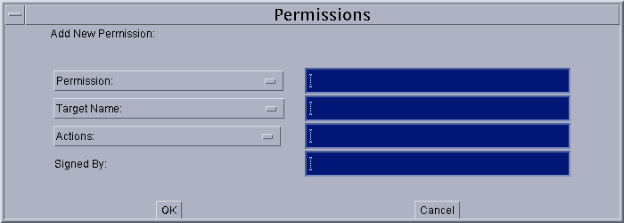
액세스권을 추가하려면 , 다음과 같이 합니다.
- 액세스권의 타입을 입력하는지, 또는 선택합니다.
「액세스권」이라고 하는 라벨이 붙은 드롭 다운 리스트에는, 짜넣어지고 있는 액세스권의 타입의 리스트가 표시됩니다. 리스트에 있는 타입을 지정하는 경우는, 리스트로부터 그 타입을 선택합니다. 선택한 액세스권의 타입의 완전한 이름이, 드롭 다운 리스트의 우측의 텍스트 박스에 표시됩니다.
사용자가 정의한 액세스권의 타입을 지정하는 경우는, 그 액세스권의 타입을 텍스트 박스에 입력합니다.
- 액세스권의타겟명을 입력하는지, 또는 선택합니다.
「액세스권」드롭 다운 리스트로부터 편입의 액세스권을 선택했을 경우, 그 타입의 액세스권에 특정의 타겟명의 값이 있을 때는, 「타겟명」이라고 하는 라벨이 붙은 드롭 다운 리스트에 그 값의 리스트가 표시되므로, 그 리스트로부터 값을 선택합니다.
타겟명의 선택사항이 무한하게 있는 경우에서도, 특별한 의미를 가지는 편입의 타겟명이 있을 때는, 그러한 타겟명이 드롭 다운 리스트에 표시됩니다. 예를 들어, 「FilePermission」의 경우의 리스트에는, 특별한 타겟명으로서 「<<All FILES>>」가 표시됩니다.
드롭 다운 리스트에 없는 타겟명을 지정하려면 , 「타겟명」드롭 다운 리스트의 우측의 텍스트 박스에 타겟명을 직접 입력합니다. 예를 들어,
/JavaSoft/ptTest/디렉토리내의data라는 이름의 파일을 지정하려면 , 다음과 같이 입력합니다./JavaSoft/ptTest/data- 액션을 지정할 필요가 있는 경우는, 1 개(살) 이상의액션을 입력하는지, 또는 선택합니다.
일부의 액세스권은, 타겟명만을 가져, 액션을 가지고 있지 않습니다. 이러한 액세스권에서는, 「액션」드롭 다운 리스트의 우측의 텍스트 박스를 공백대로 해 둡니다. 그 액세스권이 편입의 액세스권의 경우는, 텍스트 박스가 자동적으로 엷은 색 표시가 되어, 이용할 수 없게 됩니다.
액션의 지정이 필요한 액세스권의 경우는, 콤마로 단락지은 액션의 리스트를 텍스트 박스에 입력하는지, 또는 드롭 다운 리스트로부터 액션을 선택합니다. 예를 들어, 「FilePermission」로 지정된 파일에 대해서 read와 기입의 양쪽 모두의 액세스권을 지정하려면 , 우선 리스트로부터 「
read」(또는 「write」. 순서는 임의)를 선택합니다. 텍스트 박스에 「read」라고 표시됩니다. 다음에, 「write」를 선택합니다. 콤마와 스페이스가 입력되어 그 후에 「write」라고 표시됩니다.- 필요에 따라서, 「서명자」라벨의 우측의 텍스트 박스에 SignedBy 별명을 입력합니다. 액세스권 엔트리에서는,SignedBy 의 값은 생략 가능합니다. 이 값이 존재하는 경우는, 서명 첨부 액세스권인 것을 나타냅니다. 즉, 그 액세스권이 주어지도록(듯이) 하기 위해서는, 액세스권 클래스 그 자체가, 지정된 별명에 의해 서명되어 있지 않으면 안됩니다.
액세스권의 정보를 지정하면(자),「이해」버튼을 선택합니다. 조작을 취소하는 경우는,「취소」를 선택합니다. 새로운 액세스권의 행이 「정책 엔트리」다이얼로그에 표시됩니다.
이후에, 같은 순서에 따라 액세스권을 추가할 수가 있습니다. 기존의 액세스권을편집 또는삭제할 수도 있습니다.
액세스권의 편집
기존의 액세스권을 편집하려면 , 「정책 엔트리」다이알로그 박스로 액세스권의 행을 선택해,「액세스권의 편집」버튼을 선택합니다. 또는, 액세스권의 행을 더블 클릭 하는 것만으로도, 그 액세스권을 편집할 수 있게 됩니다.
새로운 액세스권을추가할 때와 같은 「액세스권」다이알로그 박스가 표시됩니다. 다만, 이 경우는, 기존의 액세스권의 정보가 표시되고 있습니다. 표시되고 있는 정보를 변경하려면 , 드롭 다운 리스트로부터 새로운 값을 선택하는지, 또는 텍스트 박스의 정보를 새로운 값으로 옮겨놓습니다.
편집이 끝나면(자),「이해」버튼을 선택합니다. 변경을 취소하는 경우는,「취소」를 선택합니다. 「정책 엔트리」다이알로그 박스에, 수정 후의 액세스권의 정보가 표시됩니다.
액세스권의 삭제
기존의 액세스권을 삭제하려면 , 「정책 엔트리」다이알로그 박스로 그 액세스권의 행을 선택해,「액세스권의 삭제」버튼을 선택합니다.
정책 엔트리의 추가의 완료
정책 엔트리의 추가가 끝나면(자), 「정책 엔트리」다이알로그 박스의「완료」버튼을 선택합니다. 조작을 취소하는 경우는,「취소」를 선택합니다.
「완료」를 선택하면(자), 지금까지의 조작으로 설정된 정책 엔트리를 나타내는 행이 「Policy Tool」윈도우에 표시됩니다. 이 행에는, CodeBase, SignedBy, 및 주체의 정보 (존재하는 경우)가 포함되어 있습니다. 「정책 엔트리」다이알로그 박스로, 어느 정보도 지정하지 않았던 경우는,
CodeBase <ALL>(와)과만 표시됩니다.
주:키스토어에 아직 존재하고 있지 않는 SignedBy 별명이 정책 엔트리에 포함되어 있는 경우는, 정책 엔트리를 닫는 시점에서 경고가 표시됩니다. 이 경우는,「이해」를 선택해, 해당하는 별명을 나중에 작성하겠습니다. 별명의 지정에 잘못이 있는 경우는,정책 엔트리를 편집해, 별명을 수정합니다.
정책 엔트리의 편집
기존의 정책 엔트리를 편집하려면 , 「Policy Tool」메인 윈도우로 그 엔트리의 행을 선택해,「정책 엔트리의 편집」버튼을 선택합니다. 또는, 엔트리의 행을 더블 클릭 하는 것만으로도, 그 엔트리를 편집할 수 있게 됩니다.
새로운 정책 엔트리를추가할 때와 같은 「정책 엔트리」다이알로그 박스가 표시됩니다. 다만, 이 경우는, 기존의 정책 엔트리의 정보가 표시되고 있습니다. 표시되고 있는 정보를 변경하려면 ,CodeBase 와 SignedBy 의 값의 경우는, 필요한 직접 입력해,주체와액세스권의 값의 경우는, 버튼을 사용해 정보를 변경합니다.
편집이 끝나면(자),「완료」버튼을 선택합니다. 조작을 취소하는 경우는,「취소」를 선택합니다.
정책 엔트리의 삭제
정책 파일로부터 정책 엔트리를 삭제하려면 , 「Policy Tool」메인 윈도우로 그 엔트리의 행을 선택해,「정책 엔트리의 삭제」버튼을 선택합니다.
선택한 정책 엔트리 전체가 표시됩니다. 이 엔트리를 삭제하려면「이해」를 선택해, 이 엔트리를 삭제하지 않는 경우는「취소」를 선택합니다.
정책 파일의 보존
기존의 정책 파일에 대한 변경 내용을 보존하려면 ,「파일」메뉴의「보존」커멘드를 선택합니다.
작성한 새로운 정책 파일을 보존하거나 기존의 정책 파일을 새로운 이름의 정책 파일에 카피하거나 하려면 ,「파일」메뉴의「별명 보존」커멘드를 선택합니다. 「별명 보존」다이알로그 박스가 표시됩니다.
디렉토리 구조를 이동해, 정책 파일의 보존처의 디렉토리를 선택합니다. 파일명을 입력해,「보존」버튼을 선택합니다. 정책 파일이 보존되어 그 파일의 이름과 패스가, 「정책 파일」이라고 하는 라벨이 붙은 텍스트 박스에 표시됩니다.
Policy Tool 의 종료
Policy Tool 를 종료하려면 ,「파일」메뉴의「종료」커멘드를 선택합니다.
경고 로그의 표시
Policy Tool 가, 경고를 경고 로그에 보존했다고 하는 메세지를 표시했을 경우는,「파일」 메뉴의「경고 로그의 표시」커멘드를 선택하면, 경고 로그를 표시할 수 있습니다.
예를 들어, 정책 파일로 키스토어의 URL 를 지정하고 있어, 이 키스토어가 아직 존재하고 있지 않는 경우는, 파일을 열 때 등, 님 자리 없는 장면에서 경고가 표시됩니다. 경고가 존재하는 경우에서도, 정책 파일의 작업은 속행할 수 있습니다.
이후에 소개하는 예에서는, 다음의 조작을 실행하는 방법을 설명합니다.
- 새로운사용자 정책 파일을 작성한다
- 정책 엔트리를 추가한다
- 키스토어를 지정한다
- 서명된 코드를 위한 정책 엔트리를 추가한다
- 인증된 코드를 위한 정책 엔트리를 추가한다
- 사용자 정책 파일을 보존한다
- Policy Tool 를 종료한다
사용자 정책 파일의 작성의 개시
초기 상태에서는, 사용자 정책 파일은 존재하고 있습니다 (수동으로 작성했을 경우를 제외하다). 사용자 정책 파일을 작성하려면 , 커멘드행에 다음과 같이 입력해 Policy Tool 를 기동합니다.
policytool「Policy Tool」윈도우가 표시됩니다.
Policy Tool 는, 기동할 때마다, 「사용자 정책 파일」이라고도 불리는 파일로부터 정책 정보를 취득해, 윈도우에 표시하려고 합니다. 디폴트의 사용자 정책 파일은, 홈 디렉토리에 있다
. java.policy라는 이름의 파일입니다. 정책 파일이 발견되지 않는 경우는, 그것을 나타내는 메세지와 공백의 「Policy Tool」윈도우가 표시됩니다. 즉, 윈도우에 표제나 버튼은 표시됩니다만, 데이터는 포함되어 있지 않습니다 (다음의 화면을 참조).
이 윈도우로 엔트리를 추가해 파일을 보존하면, 사용자 정책 파일을 작성할 수 있습니다.
정책 엔트리의 추가
예를 들어,
/tests/디렉토리로부터의 모든 클래스에 대해,/temp/data/디렉토리내의mydata라는 이름의 파일을 읽어내는 액세스권을 허가한다고 합니다. 이 경우는, 우선, 「Policy Tool」메인 윈도우로「정책 엔트리의 추가」버튼을 선택합니다.「정책 엔트리」다이알로그 박스가 표시됩니다.
이 다이알로그 박스에서는,
file:/tests/그렇다고 하는 URL 를「CodeBase」텍스트 박스에 입력합니다.
코드에 서명이 행하여지고 있을 필요는 없기 때문에,「SignedBy」텍스트 박스는 공백대로 합니다.
코드가 인증되고 있을 필요는 없기 때문에,「주체」텍스트 박스는 공백대로 합니다.
액세스권을 추가하기 위해서,「액세스권의 추가」버튼을 선택합니다. 「액세스권」다이알로그 박스가 표시됩니다.
액세스권을 추가하려면 , 다음과 같이 합니다.
- 「액세스권」드롭 다운 리스트로부터 「FilePermission」를 선택합니다. 액세스권의 타입의 완전한 이름 (java.io.FilePermission)이, 드롭 다운 리스트의 우측의 텍스트 박스에 표시됩니다.
- 「타겟명」이라고 하는 라벨이 붙은 리스트의 우측의 텍스트 박스에, 다음과 같이 입력합니다.
/temp/data/mydata- 읽기 액세스권을 지정하기 위해서, 「액션」드롭 다운 리스트로부터 「read」를 선택하는지, 또는 「액션」드롭 다운 리스트의 우측의 텍스트 박스에 「read」라고 직접 입력합니다.
여기까지의 조작으로, 「액세스권」다이알로그 박스에는, 다음과 같이 표시되고 있습니다.
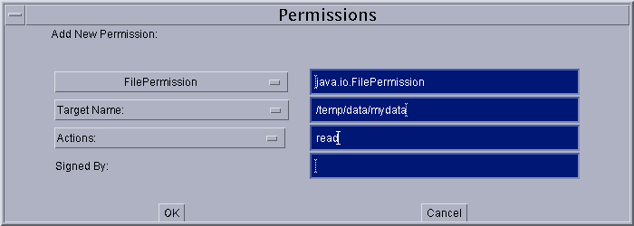
액세스권의 정보를 지정하면(자),「이해」버튼을 선택합니다. 새로운 액세스권의 행이 「정책 엔트리」다이얼로그에 표시됩니다.
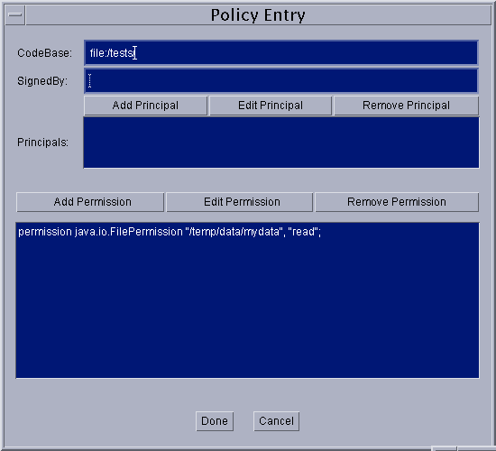
이것으로, 이 정책 엔트리의 지정은 마지막입니다. 「완료」버튼을 선택합니다. 여기서 지정한 정책 엔트리를 나타내는 행이 「Policy Tool」윈도우에 표시됩니다. 이 행에는 CodeBase 의 값만이 포함되어 있습니다.
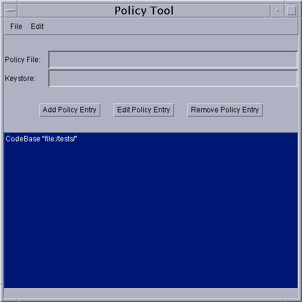
키스토어의 지정
여기에서는, 「http://java.sun.com/」(이)라고 하는 URL 에 있는 코드 가운데, 별명 「duke」의 서명자에 의해 서명된 임의의 코드에 대해서,
/tmp/디렉토리내의 모든 파일에의 읽어내 액세스권을 허가한다고 합니다. 게다가 이러한 코드에, 임의의 호스트에 대한 송신 소켓 접속을 개시할 수 있는 액세스권도 허가한다고 합니다. 이 경우는, 다음의 2 개의 조작을 실시할 필요가 있습니다.
- 필요한 별명이 들어간 키스토어를 지정한다
- 필요한 액세스권을 허가하기 위한정책 엔트리를 작성한다
정책 엔트리의 SignedBy 파트에서 지정된 별명의 열쇠 정보를 포함한 키스토어를 지정하려면 , 「Policy Tool」메인 윈도우로「편집」메뉴의「키스토어의 변경」커멘드를 선택합니다.
다이알로그 박스가 표시되면(자), 새로운 키스토어의 URL 와 키스토어의 타입 (생략 가능)을 지정합니다.
예를 들어,
/tests/디렉토리에 있는 「mykeystore」라고 하는 이름의 키스토어를 지정하려면 , 「신규 키스토어의 URL」라고 하는 라벨이 붙은 텍스트 박스에, 다음과 같이file:URL 를 입력합니다.file:/tests/mykeystore키스토어의 타입이, 시큐리티 프로퍼티 파일내의 keystore.type 프로퍼티의 값에 의해 지정된 디폴트의 타입의 경우는, 「신규 키스토어의 타입」의 값을 입력할 필요는 없습니다. 이 프로퍼티의 디폴트의 값은, 「JKS」(Sun 가 지원하는 독자적인 키스토어의 타입)입니다.
키스토어의 타입을 지정하려면 , 「신규 키스토어의 타입」이라고 하는 라벨이 붙은 텍스트 박스에 값을 입력합니다. 예를 들어, 키스토어의 타입이 「JKS」인 것을 나타내려면 , 다음과 같이 입력합니다.
JKS다이알로그 박스에는, 다음과 같이 표시됩니다.
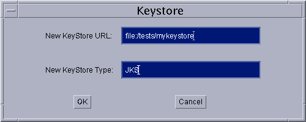
키스토어의 URL 와 타입을 지정하면(자),「이해」를 선택합니다. 「키스토어」라고 하는 라벨이 붙은 텍스트 박스에, 여기서 지정한 키스토어의 URL 와 타입이 표시됩니다.
다음에, 정책 엔트리를 지정할 필요가 있습니다.
SignedBy 별명을 지정한 정책 엔트리의 추가
「Policy Tool」메인 윈도우로「정책 엔트리의 추가」버튼을 선택합니다. 「정책 엔트리」다이알로그 박스가 표시됩니다. 「CodeBase」텍스트 박스에, 다음과 같이 입력합니다.
http://java.sun.com/*「*」은, 이 CodeBase 가 지정한 디렉토리내의 클래스 파일과 JAR 파일의 양쪽 모두를 나타내는 것을 의미합니다.
「SignedBy」텍스트 박스에는, 다음의 별명을 입력합니다.
duke코드가 인증되고 있을 필요는 없기 때문에,「주체」텍스트 박스는 공백대로 합니다.
지정하는 2 개의 액세스권 가운데, 최초의 액세스권을 추가하기 위해서,「액세스권의 추가」버튼을 선택합니다. 「액세스권」다이알로그 박스가 표시됩니다. 다음과 같이 조작합니다.
- 「액세스권」드롭 다운 리스트로부터 「FilePermission」를 선택합니다. 액세스권의 타입의 완전한 이름 (java.io.FilePermission)이, 드롭 다운 리스트의 우측의 텍스트 박스에 표시됩니다.
- 「타겟명」이라고 하는 라벨이 붙은 리스트의 우측의 텍스트 박스에, 다음과 같이 입력해,
/tmp/디렉토리내의 모든 파일을 지정합니다./tmp/*- 읽기 액세스권을 지정하기 위해서, 「액션」드롭 다운 리스트로부터 「read」를 선택합니다.
「액세스권」다이알로그 박스에는, 다음과 같이 표시됩니다.
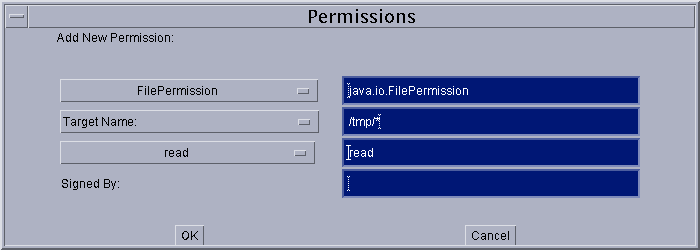
「이해」버튼을 선택합니다. 새로운 액세스권의 행이 「정책 엔트리」다이얼로그에 표시됩니다.
다음에, 2 번째의 액세스권을 지정할 필요가 있습니다. 「액세스권의 추가」버튼을 선택합니다. 「액세스권」다이알로그 박스로, 다음과 같이 조작합니다.
- 「액세스권」드롭 다운 리스트로부터 「SocketPermission」를 선택합니다. 액세스권의 타입의 완전한 이름 (java.net.SocketPermission)이, 드롭 다운 리스트의 우측의 텍스트 박스에 표시됩니다.
- 「타겟명」이라고 하는 라벨이 붙은 리스트의 우측의 텍스트 박스에, 다음과 같이 입력해, 모든 호스트를 지정합니다.
*- 접속을 실시하는 허가를 지정하기 위해서, 「액션」드롭 다운 리스트로부터 「connect」를 선택합니다.
「액세스권」다이알로그 박스에는, 다음과 같이 표시됩니다.
「이해」버튼을 선택합니다. 새로운 액세스권의 행이 「정책 엔트리」다이얼로그에 표시됩니다.
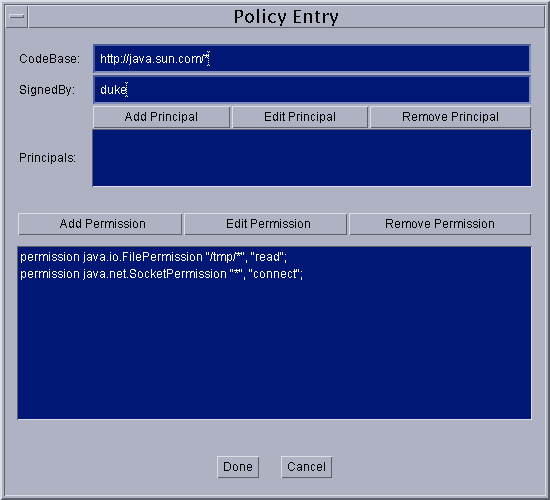
이것으로, 정책 엔트리의 지정은 마지막입니다. 「정책 엔트리」다이얼로그의「완료」버튼을 선택합니다. 「Policy Tool」윈도우에, 지정한 CodeBase, SignedBy, 및 주체의 값을 포함한 정책 엔트리의 행이 표시됩니다.
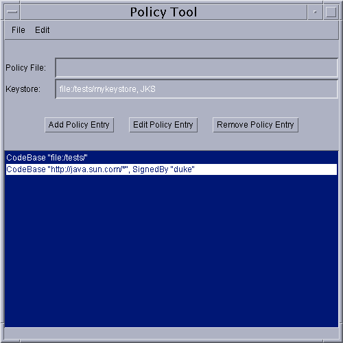
주체를 지정한 정책 엔트리의 추가
여기에서는, 다음과 같은 X500 명을 가지는 주체에 액세스권을 허가한다고 합니다.
CN=Duke, OU=JavaSoft, O=Sun Microsystems, C=US이 주체에,
/tmp/디렉토리에 대한 기입을 허가합니다.「Policy Tool」메인 윈도우로「정책 엔트리의 추가」버튼을 선택합니다. 「정책 엔트리」다이알로그 박스가 표시됩니다.
코드의 출처(소)는 제한하지 않기 때문에,「CodeBase」 텍스트 박스는 공백대로 합니다.
코드에 서명이 행하여지고 있을 필요는 없기 때문에,「SignedBy」텍스트 박스는 공백대로 합니다.
「주체의 추가」버튼을 선택합니다. 「주체」다이알로그 박스로, 다음과 같이 조작합니다.
- 「주체의 타입」드롭 다운 리스트로부터 「X500Principal」을 선택합니다. 주체의 타입의 완전한 이름 (com.sun.security.auth.X500Principal)이, 드롭 다운 리스트의 우측의 텍스트 박스에 표시됩니다.
- 「주체의 이름」이라고 하는 라벨이 붙은 리스트의 우측의 텍스트 박스에, 다음과 같이 입력해, X500Principal 의 X500 명을 지정합니다.
CN=Duke, OU=JavaSoft, O=Sun Microsystems, C=US「주체」다이알로그 박스에는, 다음과 같이 표시됩니다.
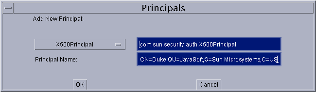
「이해」버튼을 선택합니다. 새로운 주체의 행이 「주체」리스트에 표시됩니다.
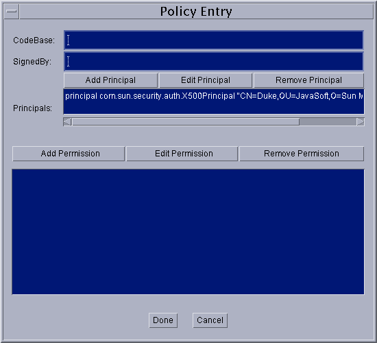
액세스권을 추가하기 위해서,「액세스권의 추가」버튼을 선택합니다. 「액세스권」다이알로그 박스가 표시됩니다. 다음과 같이 조작합니다.
- 「액세스권」드롭 다운 리스트로부터 「FilePermission」를 선택합니다. 액세스권의 타입의 완전한 이름 (java.io.FilePermission)이, 드롭 다운 리스트의 우측의 텍스트 박스에 표시됩니다.
- 「타겟명」이라고 하는 라벨이 붙은 리스트의 우측의 텍스트 박스에, 다음과 같이 입력해,
/tmp/디렉토리내의 모든 파일을 지정합니다./tmp/*- 기입 액세스권을 지정하기 위해서, 「액션」드롭 다운 리스트로부터 「write」를 선택합니다.
「이해」버튼을 선택합니다. 새로운 액세스권의 행이 「정책 엔트리」다이얼로그에 표시됩니다.
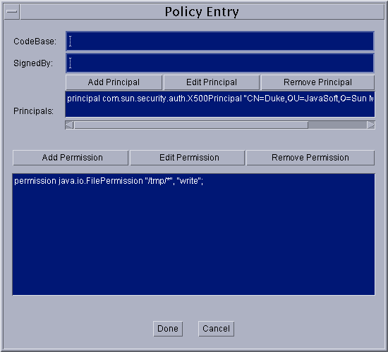
이것으로, 정책 엔트리의 지정은 마지막입니다. 「정책 엔트리」다이얼로그의「완료」버튼을 선택합니다. 「Policy Tool」윈도우에, 지정한 CodeBase, SignedBy, 및 주체의 값을 포함한 정책 엔트리의 행이 표시됩니다.
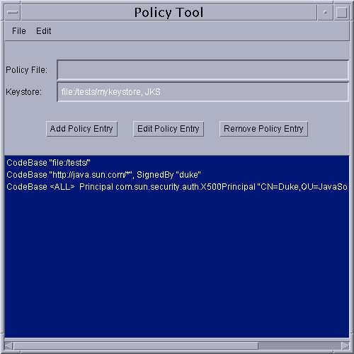
사용자 정책 파일의 보존
여기에서는, 작성한 정책 파일을, 디폴트의 장소 (홈 디렉토리)에 디폴트의 이름 (. java.policy)로 보존한다고 합니다.
작성한 사용자 정책 파일을 보존하기 위해서,「파일」메뉴의「별명 보존」커멘드를 선택합니다. 「별명 보존」다이알로그 박스가 표시됩니다.
홈 디렉토리까지 디렉토리 구조를 이동해, 다음과 같이 입력합니다.
. java.policy선두에 피리어드가 있는 것에 주의해 주세요. 그 후,「보존」버튼을 선택합니다. 정책 파일이 보존되어 그 파일의 이름과 패스가, 「정책 파일」이라고 하는 라벨이 붙은 텍스트 박스에 표시됩니다.
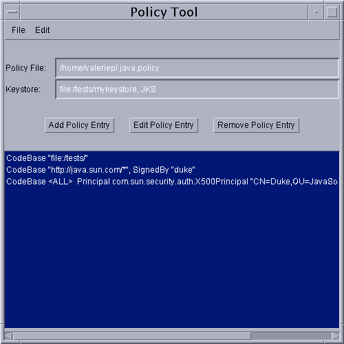
Policy Tool 의 종료
Policy Tool 를 종료하려면 ,「파일」메뉴의「종료」커멘드를 선택합니다.
- Java ™ Development Kit 에서의 액세스권
- 디폴트의 정책의 구현과 정책 파일의 구문
- keytool 툴의 메뉴얼 페이지
- 시큐리티 아키텍쳐(architecture)의 스펙
- Policy Tool 를 포함한 시큐리티 툴의 사용예에 대해서는,「Java 튜토리얼」 의「Security」 를 참조해 주세요.
|
Copyright © 2006 Sun Microsystems, Inc. All Rights Reserved. |
Java Software |